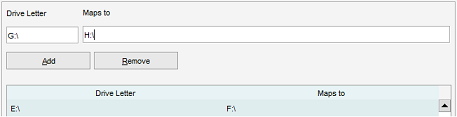

Drive Mappings
Menu path: Settings > Settings > Drive Mappings
In case a drive letter has been changed you can map this within Data Crow.
This ensures that file paths stored in Data Crow still work without you having to change the file path on each and
every item. This is a good option to use if you use Data Crow on multiple systems where the location of the
external drive differs. If the files actually have been moved and you want this reflected in Data Crow consider
using the Drive Manager.

An example for a mapping is: D:\ maps to E:\. The filename D:\TEST\TEST.MP3 will now become E:\TEST\TEST.MP3.
The path as stored in Data Crow will still be D:\TEST\TEST.MP3 but on screen the new filename will be
displayed and will also be used for all tools and operations.
Adding a Mapping
Enter the drive letter in the "Drive Letter" field and enter the new drive letter, the mapping, in the "Maps to"
field. Press "Add" to activate the drive mapping.
Removing a Mapping
Select the Drive Mapping in the table and press "Remove".